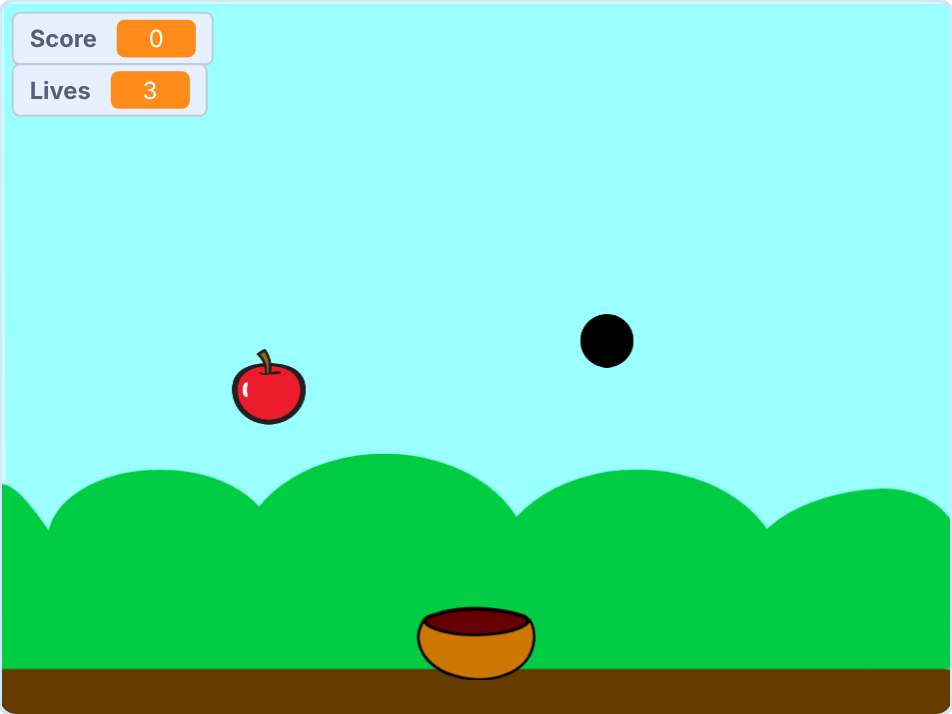

Make your own game. No sign-up needed.
Let's Code is a free, step-by-step Scratch project for Standard 5 and 6 pupils. Play the Catch and Avoid game, then build it yourself.

1
Play
Try Catch and Avoid. Move the basket, catch apples and avoid bombs.
2
Build
Follow six short steps with pictures. You start from a ready file.
3
Fix the bugs
A bug is a mistake in code. Each Bug Card has one to find and fix.
What you need
- A laptop or computer.
- Scratch Desktop (free), or the online Scratch editor in your browser.
- The starter file, from the Build page.
- About 70 minutes. You can stop and carry on later.
You can play the game on a phone, but building needs a laptop or computer.